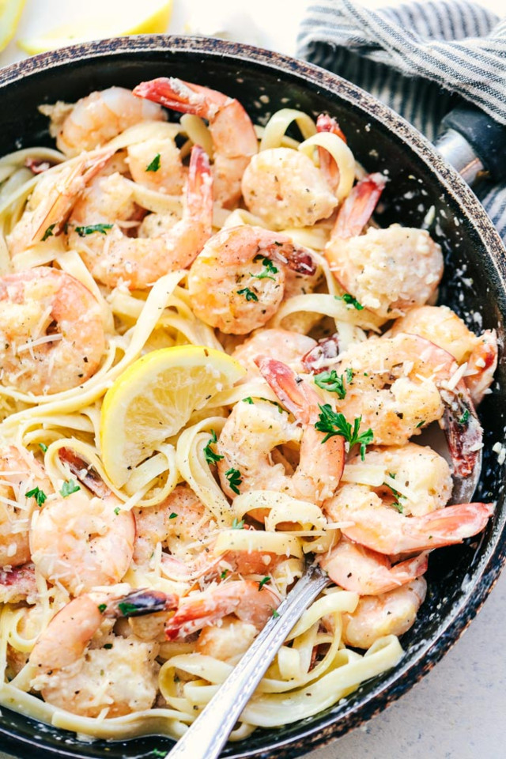

Massa com molho de camarão.

Uma massa leve e perfumada, com camarões salteados no alho e azeite, molho de tomate fresco e um toque de salsinha. Fica pronta em menos de 30 minutos e tem cara de prato de restaurante à beira-mar.
Ingredientes:
- 400 g de espaguete ou linguine
- 500 g de camarão médio limpo
- 4 dentes de alho picados
- 3 colheres de sopa de azeite
- 1 cebola pequena picada
- 300 g de tomate-cereja cortado ao meio
- 1/2 xícara de creme de leite (opcional)
- Suco de 1/2 limão
- Salsinha picada a gosto
- Sal e pimenta-do-reino a gosto
Etapas:
- Cozinhe a massa em bastante água fervente com sal até ficar al dente e reserve uma xícara da água do cozimento.
- Tempere o camarão com sal, pimenta e o suco de limão.
- Aqueça o azeite numa frigideira grande e doure metade do alho.
- Salteie o camarão por 2 minutos de cada lado, até ficar rosado, e retire da frigideira.
- Na mesma frigideira, refogue a cebola e o restante do alho.
- Junte o tomate-cereja e cozinhe até começar a desmanchar.
- Se quiser um molho cremoso, acrescente o creme de leite.
- Volte o camarão para a frigideira, adicione a massa e misture, usando a água do cozimento para soltar o molho.
- Finalize com salsinha picada e sirva na hora.
Home